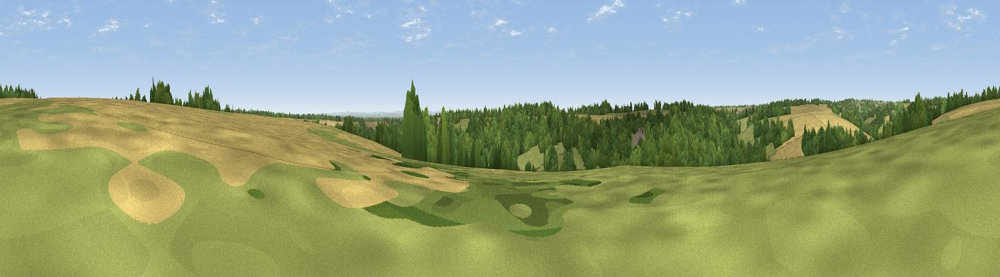

Viewpoint near Bagendon
#42170 in England · top 84% of its area beats it · near Bagendon · access?Where it is
The exact computed spot (SP 00575 07275). Click the marker for map links.
Public access: no public right of way or access land is recorded at this exact spot — it may be on private land. Computed from Natural England's CRoW access layer and OpenStreetMap rights of way — not the legal definitive map. Always verify locally.
The view, rendered

A 360° render of this exact spot computed from the terrain model, tree cover and land cover — summer colours, afternoon light, calibrated against photographs of famous viewpoints. Real trees, hedges and buildings will differ in detail.
The panorama
Grey silhouette: terrain skyline in each direction (720 bearings, Earth curvature and refraction included). Dashed green: skyline with trees (+15 m) and buildings (+8 m) as obstacles. Blue strip: how far the ground is visible on each bearing.
Where the view opens
Wedge length = distance to the farthest visible ground on that bearing (vegetation-aware). Rings at 10, 25 and 50 km.
What fills the view
45% woodland · 28% cropland · 26% grassland ·
Angular shares of the visible panorama (visual magnitude), not map area. Landscape diversity 0.48 (0–1 Shannon).
Key numbers
More beautiful places nearby
The staircase of upgrades: each row has a higher view potential than everything closer. Driving times are estimates from straight-line distance, calibrated against real road routing — check an actual route before setting out.
| Place | Direction | Drive | Score |
|---|---|---|---|
| Viewpoint near Woodmancote | NNE · 2 km | ~5 min | 22.5 |
| Viewpoint near Rendcomb | NE · 2 km | ~6 min | 35.4 |
| Viewpoint near Rendcomb | NNE · 5 km | ~10 min | 41.4 |
| Pen Hill | NNW · 5 km | ~11 min | 66.4 |
| Birdlip Hill | NW · 11 km | ~20 min | 71.7 |
| Viewpoint near Witcombe | NW · 12 km | ~22 min | 72.2 |
| Viewpoint near Leckhampton | NNW · 12 km | ~23 min | 73.7 |
| Viewpoint near Leckhampton | NNW · 13 km | ~23 min | 77.8 |
51.76416, -1.99307 · source: screening · position refined by local search. Computed location — check access rights before visiting.